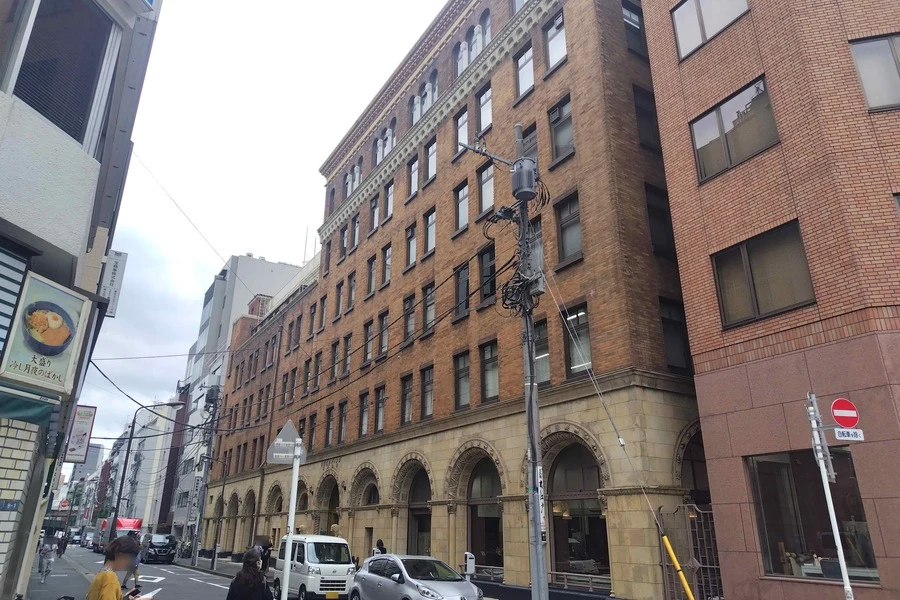

Kanda–Nihonbashi, Tokyo
Between the Centers
Urban Design Studio 2026 studies building renewal, heat and flooding, and streets for public life in Kajicho.

Kajicho on site



Kanda–Nihonbashi, Tokyo
Urban Design Studio 2026 studies building renewal, heat and flooding, and streets for public life in Kajicho.
